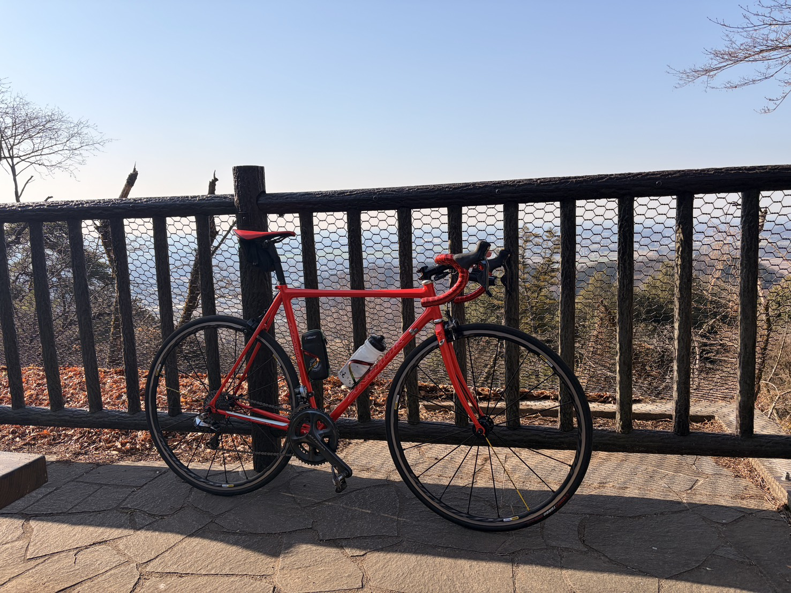

PLAN
目標と現状メニュー
トップに置くと重い情報なので、見たい人だけ来られる別ページにまとめます。ゴールドは狙う。でも楽しく続けることを優先します。あと飽き性なので萎えたら疾走するかも。

GOAL
大方針
- 富士ヒルゴールドは一応狙うただし、1年あるので気楽に進める。途中でモチベーションが落ちたら出ない選択も普通にあり。
- 楽しく走れる状態を優先過度に追い込み続けるより、ライドが嫌にならない状態を守る。
- 登りで踏み続ける力を伸ばす富士ヒル特化で60分ローラーで4倍だせればゴールド取れるのでは？と思ったので出来るのか試したい。絵に描いた餅なのか？
CURRENT NUMBERS
現在の数値
体重とFTPを入れると、パワーウェイトレシオ（PWR）が自動で計算されます。入力した値はこの端末に保存されます。
※ パワーウェイトレシオ＝FTP ÷ 体重。20分走パワーの約95%がFTPの目安です。富士ヒルゴールドはおおむね 4.0〜4.2 W/kg 前後が目安と言われます。
ROLLER
ローラーメニュー
使用ローラーはGT-ROLLER Q1.1。最終目標は60分FTPで踏める足。今は無理。
更新日6/13 Sweet Spot風 35分
- 0-8分アップ 100-160W
- 8-18分ON 250-275W
- 18-23分OFF 120-150W
- 23-33分ON 250-275W
- 33-35分クールダウン 90-120W
強め: VO2刺激 35分
- 0-10分アップ 100-180W
- 10-31分3分 330-360W / 3分レストを4本
- 31-35分クールダウン 90-120W
FOOD
食事と補給の方針
- ライド日はご飯250-300gを試す精米機を買ったので玄米30kg買って5部づきで食べてます。そっちの方が栄養取れて効率いい気がするから。
- 朝起きて1杯、練習後にもプロテイン今はエクスプロージョンのプロテイン飲んでます。元マイプロユーザーですが、セールの時狙うのが疲れました。
- 食事まで空く日は糖質を足す朝はプロテインとパン200kcal、コーヒー、プロテインで固定してます。もう朝食考えるのめんどくさい！
AI RULE
AI相談の使い方
採用するもの
疲労管理、メニュー整理、食事の仮説、記事構成など。続けやすくなる提案は積極的に採用します。
却下するもの
生活がつまらなくなる正論、数字だけを追う案、今の気分と合わない案。AIとは普通に喧嘩します。